Отключение залипания клавиш
В этом уроке я покажу, как отключить залипание клавиш. Разберемся, что это за функция, как ее выключить и снова включить в Windows.
Что это и почему включилось
По умолчанию данный режим включается при одновременном нажатии кнопки Shift более 5 раз. Windows издает специальный сигнал и выводит информационное окошко с предложением включить залипание.Этот режим позволяет нажимать горячие кнопки не вместе, а по отдельности.
Например, в обычном режиме для копирования нужно зажать Ctrl и вместе с ней нажать на кнопку C. В режиме залипания клавишу держать не нужно. То есть просто нажимаем сначала на Ctrl, затем на С – по очереди, а не совместно.
В некоторых случаях это удобно, но часто наоборот мешает. Например, в компьютерных играх, где Shift приходится зажимать довольно часто, а информационное окно сворачивает или завершает игру.
Как отключить
Windows 10
В системе Windows 10 выключить режим залипания можно одним из двух способов:
- Через Параметры
- В Панели управления
После применения настроек функция перестанет активироваться при пятикратном нажатии на Shift.
Способ 1: через Параметры
1. В меню Пуск откройте «Параметры».
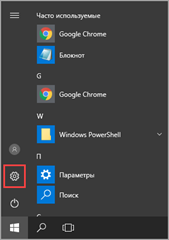2. Перейдите в раздел «Специальные возможности».
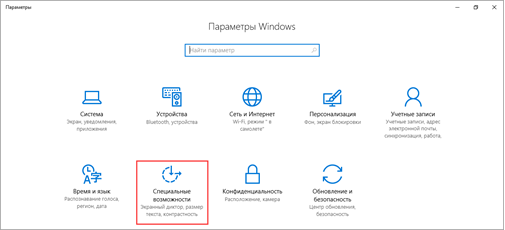3. Откройте вкладку «Клавиатура» и измените переключатель «Залипание клавиш» в положение «Вкл.» для перехода в дополнительные настройки.
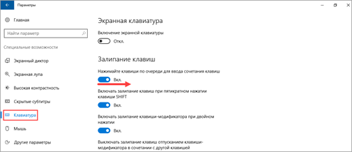4. Переведите переключатель «Включать залипание клавиш при пятикратном нажатии клавиши Shift» в положение «Откл.».
Дополнительно можно отключить фоновый звук. Для этого переведите переключатель «Воспроизводить звук» в положение «Откл.».
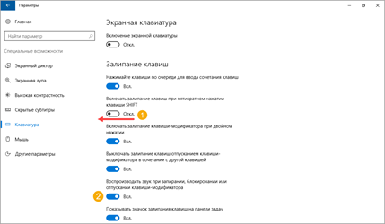5. Отключите функцию.
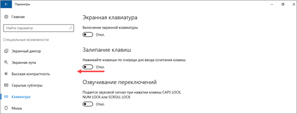Способ 2: через Панель управления
1. Откройте стандартную Панель управления через меню Пуск.
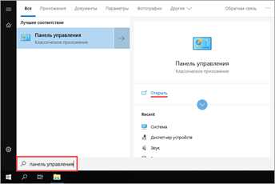2. Перейдите в раздел «Центр специальных возможностей».

3. Кликните по пункту «Облегчение работы с клавиатурой».
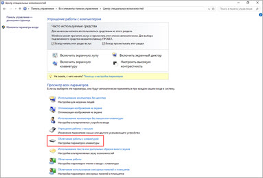4. На вкладке «Упростить набор текста» деактивируйте пункт «Включить залипание клавиш».
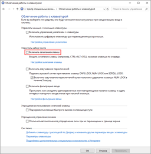Windows 8
1. В меню Пуск откройте «Параметры компьютера».
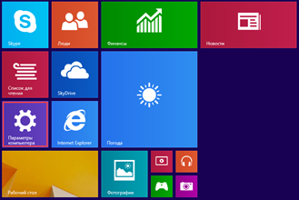2. Щелкните по пункту «Специальные возможности».
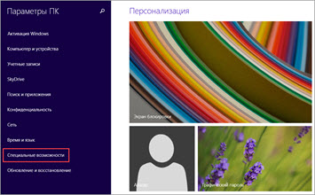3. Переведите переключатель в положение «Откл».
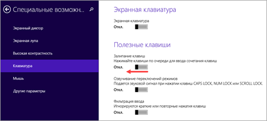Для отключения активации режима при пятикратном нажатии Shift выполните следующие действия:
- Коротко нажмите пять раз на Shift для вызова информационного окошка.
- Кликните по пункту «Перейти в центр специальных возможностей».
- Уберите галочку с пункта «Включать залипание клавиш при пятикратном нажатии клавиши SHIFT». Также можно отключить системный звук при изменении режима.
- Кликните по кнопке «Применить» и «ОК».
Windows 7
В Windows 7 все действия выполняются в стандартной Панели управления или через информационное окошко.
1. В меню Пуск откройте Панель управления.
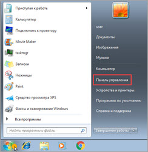2. Перейдите в «Центр специальных возможностей».
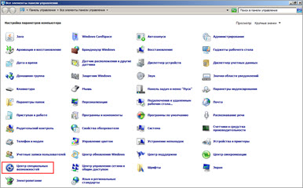3. Щелкните по пункту «Облегчение работы с клавиатурой».
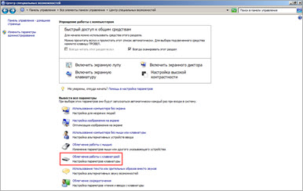4. В части «Упростить набор текста» снимите галочку с чекбокса «Включить залипание клавиш».
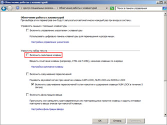5. Щелкните по пункту «Настройка».
Для быстрого перехода в настройки можно пять раз нажать на Shift и перейти в центр специальных возможностей.
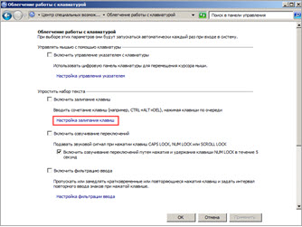6. Уберите галочку с раздела «Включать залипание при пятикратном нажатии клавиши SHIFT». Можно также убрать звуковой сигнал при изменении режима.
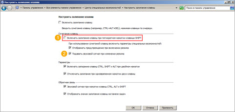Примените действие и закройте окошко.
Windows XP
1. Кликните по кнопке «Пуск», наведите курсор на пункт «Настройка» и откройте «Панель управления».
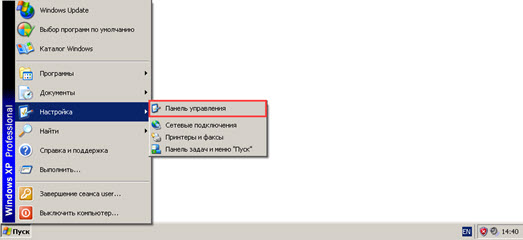2. Дважды кликните по разделу «Специальные возможности».
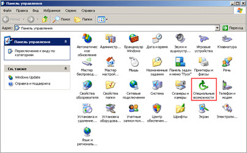3. На вкладе «Залипание клавиш» нажмите кнопку «Настройка».
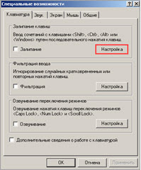4. Деактивируйте галочку «Использовать такой способ включения».
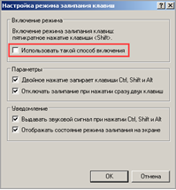Нажмите «ОК» и закройте окно.
Если не помогло
Если стандартные способы не сработали, можно отключить режим через системный реестр. Способ проверен и работоспособен на Windows 10, 8.1, 7.
Важно! Следуйте инструкции очень внимательно, так как внесение не верных параметров может нарушить работу системы.
1. Напечатайте regedit в меню Пуск, и откройте приложение от имени администратора.
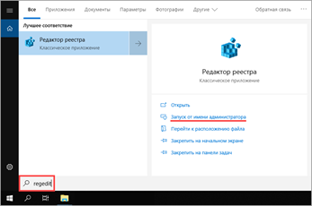2. Слева поочередно раскройте ветки: HKEY_CURRENT_USER - Control Panel – Accessibility - StickyKeys. В правом окошке дважды щелкните по параметру «510».
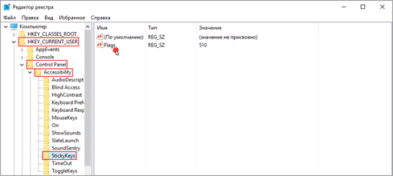3. Введите значение «506» и нажмите «ОК».
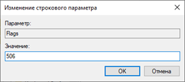4. Закройте редактор реестра, перезагрузите компьютер.
Если клавиатура продолжит самопроизвольно печатать текст или кнопки продолжат залипать, скорее всего, проблема в самой клавиатуре. Возможно на неё попала влага, пыль или другой инородный предмет. Замените клавиатуру, и проверьте работу системы.
Как включить
Способ 1: с помощью Shift
- Коротко нажмите пять раз кнопку Shift.
- В информационном окошке кликните по «Да».
- Режим активируется, и в системном трее появится специальная иконка.
Способ 2: через Пуск
1. Напечатайте в меню Пуск залипание клавиш. Откройте приложение.
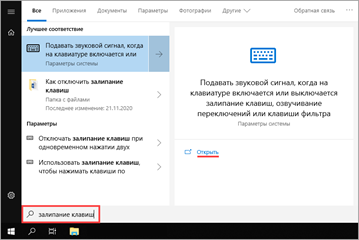2. Переведите переключатель в положение «Вкл.»
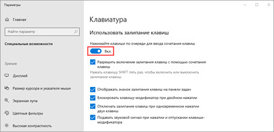Способ 3: в Панели управления
1. Введите в меню Пуск команду панель управления. Запустите приложение.
2. Перейдите в «Центр специальных возможностей».
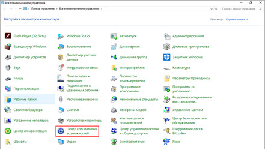3. Откройте меню «Облегчение работы с клавиатурой».
4. На вкладке «Упростить набор текста» активируйте галочкой пункт «Включить залипание клавиш».
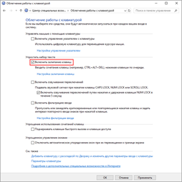Нажмите кнопку «Применить» и «OK».